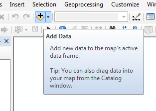
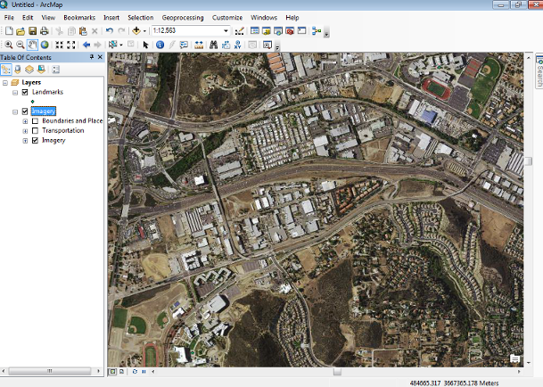

We need to add a couple of map layers, but before we can do that we need to make a "folder connection".
| 1. Click on the "Add data" button at the top of the screen, it's the little yellow diamond with a + on it, like in the picture to the right. If you hover over it you will see a "tool tip" pop up that will tell you what the tool is for. |  |
|
2. In the "Add Data" window that pops up you will need to establish a new "folder connection" to the place where all the files are kept. The animation to the right shows you the steps - you need to:
You will be back in the "Add Data" window, with four folders showing. |
|
| 3. Double-click on the Activity1 folder, and select "Landmarks.shp" file, and click "Add". |
Now, click the "Add data" button again, select "World Imagery.lyr", and add it to the map. Your map should now look like this:
The Landmarks layer just has two points in it, one for Mission Hills High, and one for CSU San Marcos. Since it was the first file we added the map is zoomed in to show the "extent" of this file - in other words, the map zoomed in with MHHS in the upper right corner, and CSUSM in the lower left. You can see the MHHS track and football field in the upper right corner, and CSUSM's track and field in the lower left.
You may not be able to see the points for our landmarks - if you un-check the box next to "Imagery" in the white "Table of Contents" area to the left of your image, the image will be removed from the map and you'll see the two little dots that represent the schools.
Now that you have an image to look at, we can learn how to explore a little - in step 3 you'll learn to pan and zoom to look at parts of the image that interest you.